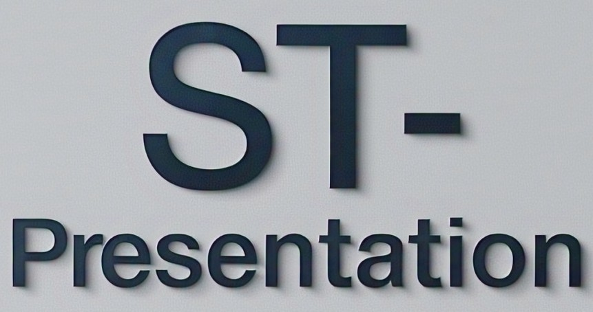

ST-Presentation is SoftTech’s cutting-edge presentation software that empowers users to create visually stunning and professionally polished slides in minutes. Designed for business professionals, educators, and creatives, ST-Presentation blends simplicity with powerful features.
Key features of ST-Presentation include:
Whether you're pitching an idea, delivering a lecture, or designing a portfolio, ST-Presentation makes it easy and impactful. Present your ideas with confidence — the SoftTech way.